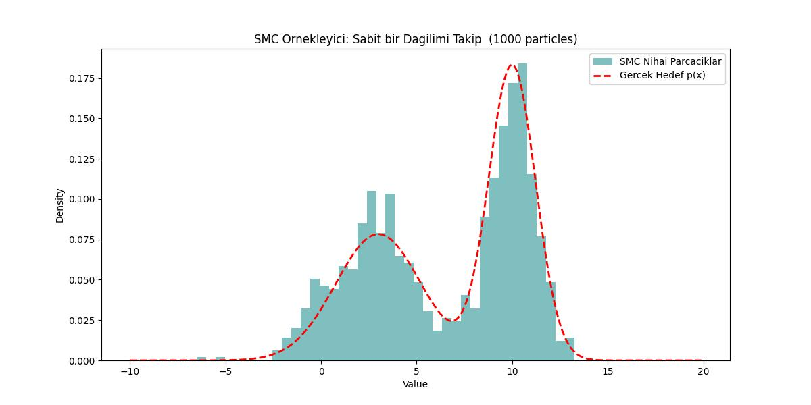

Monte Carlo entegrasyonu bir entegral mesela \(f(x)\)’i sayısal olarak kestirmek (estimation), ona yakın bir sonuca sayısal olarak erişmenin yöntemidir. Arkasında yatan teori oldukca basit, diyelim ki \(f(x)\)’i bir \(D\) tanım bölgesi (domain) üzerinden entegre etmek istiyoruz [1].
\[ I = \int_{x \in D} f(x) \mathrm{d} x \]
Tek değişkenli fonksiyonlar için etki tek boyutlu ve entegrasyon sınırları basit olarak \(a\) ile \(b\) arasında.
Biraz cebirsel numara yaparsak, mesela üstteki formülü \(p(x)\) ile çarpalım bölelim (hiçbir değişiklik yaratmamış oluyoruz aslında)
\[ I = \int_{a}^{b} \frac{f(x)}{p(x)} p(x) \mathrm{d} x \]
\(f(x)/p(x)\) bölümüne bir isim verelim, mesela \(g(x)\),
\[ I = \int_{a}^{b} g(x) p(x) \mathrm{d} x \]
Üstteki formül bir beklenti (expectation) hesabına benzemiyor mu? Evet, \(g(x)\)’in \(p(x)\) yoğunluğu üzerinden beklentisi bu formüldür,
\[ E[g(x)] = I = \int_{a}^{b} g(x) p(x) \mathrm{d} x \]
Beklenti hesabını örneklem ortalaması ile yaklaşık hesaplayabileceğimizi biliyoruz, etki alanından \(N\) tane \(x_i\) örneklemi alalım mesela, o zaman
\[ E[g(x)] \approx \frac{1}{N} \sum_{i=1}^{N} g(x_i) = \frac{1}{N} \sum_{i=1}^{N} \frac{f(x_i)}{g(x_i)} \]
Diyelim ki \(a,b\) arasında örneklem aldığımız sayılar birörnek (uniform) dağılımdan geliyor, yani \(p(x)\) birörnek dağılımın yoğunluğu, \(p(x) = 1/(b-a)\), bunu üstteki son formüle sokarsak,
\[ = (b-a) \frac{1}{N} \sum_{i=1}^{N} f(x_i) \]
Bu son formül \(f(x)\)’in \(a,b\) arasındaki ortalamasını hesaplıyor ve onu aralığın uzunluğu ile çarpıyor, bir anlamda bir dikdörtgen alanını hesaplıyoruz, ki bu dikdörtgenin eni \(a,b\) aralığının uzunluğu, yüksekliği ise \(f(x)\)’in beklenti değeri.
Mesela \(f(x) = x^2\)’nin entegralini bulalım, aralık \(-2,+2\) arası,
def func1(x):
return x**2
def func1_int(a, b):
return (1/3)*(b**3-a**3)
def mc_integrate(func, a, b, n = 1000):
vals = np.random.uniform(a, b, n)
y = [func(val) for val in vals]
y_mean = np.sum(y)/n
integ = (b-a) * y_mean
return integ
print(f"Monte Carlo çözümü: {mc_integrate(func1, -2, 2, 500000): .4f}")
print(f"Analitik çözüm: {func1_int(-2, 2): .4f}")Monte Carlo çözümü: 5.3323
Analitik çözüm: 5.3333Monte Carlo çözümü: 5.3254
Analitik çözüm: 5.3333Eğer boyutları arttırsak çözümün genel yapısı değişmiyor mesela üç boyuta çıktık diyelim [3, sf. 752], entegral hesabı alttaki gibi gözükecekti,
\[ \int_{x_0}^{x_1} \int_{y_0}^{y_1} \int_{z_0}^{z_1} f(x,y,z) \mathrm{d} x \mathrm{d} y \mathrm{d} z \]
O zaman Monte Carlo hesabı için \(X_i = (x_i,y_i,z_i)\) örneklemi almak gerekir, çok boyutlu yine birörnek dağılımdan diyelim, ve \(p(X)\) hesaplanır, ve kestirme hesap
\[ \frac{(x_1-x_0)(y_1-y_0)(z_1-z_0)}{N} \sum_i f(X_i) \]
Bu hesap için bir örnek, iki boyutlu bir fonksiyonun entegralini hesaplayalım, \(f(x) = 10 - x_1^2 - x_2^2\), sınırlar \(-2,+2\) olsun.
def func1(x):
return 10 + np.sum(-1*np.power(x, 2), axis=1)
def mc_integrate(func, a, b, dim, n = 1000):
x_list = np.random.uniform(a, b, (n, dim))
y = func(x_list)
y_mean = y.sum()/len(y)
domain = np.power(b-a, dim)
integ = domain * y_mean
return integ
print(f"Monte Carlo çözümü : {mc_integrate(func1, -2, 2, 2, 1000000): .3f}")
print(f"Analitik çözüm: 117.333")Monte Carlo çözümü : 117.305
Analitik çözüm: 117.333Doğru Sonuca Yakınsama
Fakat niye Monte Carlo hesaplamanın normal sayısal entegral yöntemlerinden daha iyi olacağını motive etmedik / açıklamadık. Sonuçta \(a,b\) arası birörnek dağılımdan örneklem almak niye bu aralığı eşit parçalara bölerek dikdörtgen alanlarını klasik şekilde toplamaktan daha iyi olsun ki?
Bu sorunun cevabı çok boyutlulukta gizli; MC tek boyutta diğer klasik yöntemlere kıyasla aşağı yukarı aynı cevabı aynı hızda verebilir, fakat yüksek boyutlara çıktıkça MC yöntemleri parlamaya başlıyor çünkü hataları örneklem büyüklüğü \(N\) sayısına bağlı, boyut sayısına değil. Klasik sayısal yöntemlerde boyut arttıkça hesapsal yükler katlanarak artar, MC bu tür problemlerden korunaklıdır.
İspatlamak için MC tahmin edici / kestirme hesaplayıcı (estimator) varyansını hesaplamak bilgilendirici olur. Bu varyans bize ortalama hata hakkında ipucu verecektir, ve hatanın azalmasında hangi faktörlerin rol oynadığını gösterir. Biraz önce hesaplanan büyüklüğü hatırlarsak, ona \(\bar{g}\) diyelim [2, sf. 455],
\[ \bar{g} = \frac{1}{N} \sum_{i=1}^{N} g(X_i) \]
\[ Var(\bar{g}) = Var \left[ \frac{1}{N} \sum_{i=1}^{N} g(X_i) \right] \]
Varyans operasyonu toplamın içine nüfuz edebilir, ayrıca sabitler karesi alınarak dışarı çıkartılabilir, o zaman
\[ = \frac{1}{N^2} \sum_{i=1}^{N} Var[ g(X_i)] \]
Eğer herhangi bir \(X_1,X_2,..\) değişkenine \(X\) dersek ve tüm \(X_i\) rasgele değişkenlerinin varyansı aynı olacağı için üstteki toplam aynı varyansı \(N\) kere toplar, o zaman \(N\) dışarı çıkartılıp \(1/N^2\) deki bir \(N\)’yi iptal etmek için kullanılabilir, yani
\[ Var(\bar{g}) = \frac{1}{N} Var[ g(X)] \]
Her iki tarafın karekökünü alırsak,
\[ \sqrt{Var(\bar{g})} = \frac{1}{\sqrt{N}} \sqrt{Var[ g(X)]} \]
Gördüğümüz gibi örneklem ortalamasının standart sapması \(1/\sqrt{N}\) oranında küçülüyor, eğer \(n\)’yi dört katına çıkartırsak, yani dört kat daha fazla örneklem kullanırsak, standart sapma yarıya düşüyor. Bu düşüş yüksek boyutlarda da geçerli oluyor, bu sebeple Monte Carlo yöntemleri yüksek boyutta klasik sayısal entegral yöntemlerinden daha iyi performans gösteriyor.
Kıyasla eksenleri eşit parçalara bölerek entegre hesaplayan yöntemler (quadrature) boyutlar yükseldikça problem yaşarlar. Diyelim ki tek boyutta sayısal entegral hesap için başlangıç ve bitiş sınırları arasını 10 parçaya bölüyoruz. Boyutlar ikiye çıkarsa ve aynı yöntemle devam edersek 10 çarpı 10 = 100 noktalı bir izgara (grid) elde ederiz. Bir sonraki boyut için benzer büyüme, 10’ar 10’ar bir artış var elimizde. Altı boyut bizi 1 milyon noktaya getirir ve dikkat, öyle müthiş bir çözünürlülük te kullanmadık, sınırlar arasında 10 tane nokta var sadece. Eğer çözünürlüğü arttırsak, 100 desek bunun katlanarak artması bizi çok büyük rakamlara getirecektir, ve bu kadar fazla hesap noktası hesapsal yükü arttırıp hesap algoritmasinin yavaşlatacaktır. Monte Carlo yaklaşımları “boyut laneti (the curse of dimensionality)’’ denen kavramdan korunaklıdır, \(N\) arttıkça performansı artar, ve bu \(N\) sayısı boyut \(D\) ile bağlantılı değildir.
Parçacık filtresini, ya da Sıralı Monte Carlo yaklaşımını anlamak için statik tahmin ile dinamik durum-uzayı modelleri arasındaki boşluğu kapatmamız gerekiyor. Gereken matematiksel işlemler alttadır.
Monte Carlo İntegrasyonu: Bu konuyu üstte işlemiştik, tekrar üzerinden geçelim. Monte Carlo yöntemleri, karmaşık bir integrali, \(p(x)\) dağılımını \(N\) adet rastgele örnek (parçacık) kümesiyle \(\{x^{(i)}\}_{i=1}^N\) temsil ederek yaklaşık olarak hesaplar.
Şu formdaki bir integral için: \[I = \int f(x) p(x) dx\]
Bunu sayısal ortalama kullanarak yaklaşık olarak hesaplayabiliriz: \[\hat{I} \approx \frac{1}{N} \sum_{i=1}^N f(x^{(i)})\] burada \(x^{(i)} \sim p(x)\). \(N \to \infty\) iken, tahmin Büyük Sayılar Yasası sayesinde gerçek değere yakınsar.
Önem Örneklemesi: Pek çok durumda, “hedef” dağılım \(p(x)\)’ten doğrudan örnekleyemeyiz, çünkü bu dağılım bilinmiyor ya da karmaşık olabilir. Bunun yerine, bilinen bir öneri dağılımı \(q(x)\)’ten örnekleme yaparız (önem yoğunluğu olarak da adlandırılır).
İntegrali şu şekilde yeniden yazarız:
\[ I = \int f(x) \frac{p(x)}{q(x)} q(x) dx \]
\(w(x) = \frac{p(x)}{q(x)}\) terimi normalleştirilmemiş önem ağırlığıdır. Monte Carlo tahmini şu hale gelir:
\[ \hat{I} \approx \frac{1}{N} \sum_{i=1}^N f(x^{(i)}) w(x^{(i)}) \quad \text{burada } x^{(i)} \sim q(x) \]
Normalleştirme
Bayesçi filtrelemede, \(p(x)\)’i çoğunlukla yalnızca bir normalleştirme sabitine kadar biliriz (yani \(p(x) \propto \pi(x)\)). Paydayı bilmiyorsak, Öz-Normalleştirilmiş Önem Örneklemesi kullanırız:
\[I \approx \frac{\sum_{i=1}^N f(x^{(i)}) w(x^{(i)})}{\sum_{j=1}^N w(x^{(j)})}\]
Normalleştirilmiş ağırlıkları \(W^{(i)} = \frac{w(x^{(i)})}{\sum w(x^{(j)})}\) olarak tanımlarsak şunu elde ederiz:
\[\hat{I} \approx \sum_{i=1}^N W^{(i)} f(x^{(i)})\]
Sıralı Önem Örneklemesi (SIS)
\(Y_t = y_{1:t}\), \(X_t = x_{0:t}\) olduğunu varsayalım.
Şimdi yukarıdakileri, \(Y_t\) gözlemlerine dayanarak \(X_t\) durum dizisini tahmin etmek istediğimiz dinamik bir sisteme uyguluyoruz. Hedef dağılım, sonsal dağılım \(p(X_t | Y_t)\)’dir.
Özyinelemeli Hedef
Bayes kuralını kullanarak, \(t\) anındaki sonsal dağılım, \(t-1\) anındaki sonsal dağılım cinsinden şöyle ifade edilebilir:
\[ p(X_t | Y_t) \propto p(y_t | x_t) p(x_t | x_{t-1}) p(X_{t-1} | Y_{t-1}) \tag{1} \]
Bunu nasıl elde ettik?
Bu, türetmenin en kritik kısmıdır; çünkü o büyük ortak olasılığı küçük, yönetilebilir parçalara ayırmak için Birinci Dereceden Markov Özelliği ve Ölçüm Bağımsızlığı varsayımlarına dayanır. Bir kenara not düşelim; böyle bir çerçeve şu şekilde tanımlanır:
Evrim (veya Geçiş) Modeli: \(p(x_t | X_{t-1}) = p(x_t | x_{t-1})\) Bu, Markov Özelliğidir. Mevcut durumun, en son duruma koşullu olarak geçmiş durumlardan bağımsız olduğunu belirtir.
Ölçüm (veya Gözlem) Modeli: \(p(y_t | X_t, Y_{t-1}) = p(y_t | x_t)\) Bu, Ölçüm Bağımsızlığıdır. \(t\) anındaki gözlemin, mevcut \(x_t\) durumuna koşullu olarak diğer tüm değişkenlerden bağımsız olduğunu belirtir.
Devam ederek (1)’i genişletmek için, sonsal dağılımın tanımından başlayıp Bayes Kuralı’nı kullanırız: \(P(A, B | C) = P(B | A, C) P(A | C)\).
En son ölçümü (\(y_t\)) ayır
\(y_t\)’yi “yeni kanıt” olarak, geri kalanı \((\mathbf{X}_t, \mathbf{Y}_{t-1})\) ise bağlam olarak ele alıyoruz:
\[p(\mathbf{X}_t | \mathbf{Y}_t) = p(\mathbf{X}_t | y_t, \mathbf{Y}_{t-1})\]
Bayes Kuralını uygula:
\[p(\mathbf{X}_t | y_t, \mathbf{Y}_{t-1}) = \frac{p(y_t | \mathbf{X}_t, \mathbf{Y}_{t-1}) p(\mathbf{X}_t | \mathbf{Y}_{t-1})}{p(y_t | \mathbf{Y}_{t-1})}\]
Yalnızca orantısallığa (\(\propto\)) ihtiyacımız olduğundan paydayı düşürebiliriz:
\[ p(\mathbf{X}_t | \mathbf{Y}_t) \propto \underbrace{p(y_t | \mathbf{X}_t, \mathbf{Y}_{t-1})}_{\text{A Terimi}} \cdot \underbrace{p(\mathbf{X}_t | \mathbf{Y}_{t-1})}_{\text{B Terimi}} \]
A Terimini Basitleştir (Olurluk)
A Terimi: \(p(y_t | \mathbf{X}_t, \mathbf{Y}_{t-1})\)
Bir GMM’de (Gizli Markov Modeli), \(y_t\) ölçümü yalnızca mevcut \(x_t\) durumuna bağlıdır. Geçmiş durumları (\(\mathbf{X}_{t-1}\)) veya geçmiş ölçümleri (\(\mathbf{Y}_{t-1}\)) dikkate almaz.
Sonuç: \(p(y_t | \mathbf{X}_t, \mathbf{Y}_{t-1}) = p(y_t | x_t)\)
B Terimini Basitleştir (Tahmin)
B Terimi: \(p(\mathbf{X}_t | \mathbf{Y}_{t-1})\)
Şimdi \(\mathbf{X}_t\) yolunu “mevcut durum” \(x_t\) ve “önceki yol” \(\mathbf{X}_{t-1}\) olarak ayırıyoruz:
\[ p(x_t, \mathbf{X}_{t-1} | \mathbf{Y}_{t-1}) = p(x_t | \mathbf{X}_{t-1}, \mathbf{Y}_{t-1}) p(\mathbf{X}_{t-1} | \mathbf{Y}_{t-1}) \]
Bir GMM’de, \(x_t\) durumu yalnızca bir önceki \(x_{t-1}\) durumuna bağlıdır. > Sonuç: \(p(x_t | \mathbf{X}_{t-1}, \mathbf{Y}_{t-1}) = p(x_t | x_{t-1})\)
Basitleştirilmiş terimleri denkleme geri koy:
\[ p(\mathbf{X}_t | \mathbf{Y}_t) \propto \underbrace{p(y_t | x_t)}_{\text{A Teriminden}} \cdot \underbrace{p(x_t | x_{t-1}) p(\mathbf{X}_{t-1} | \mathbf{Y}_{t-1})}_{\text{B Teriminden}} \]
Bu neden “Özyinelemeli”dir
Son terime bakın: \(p(\mathbf{X}_{t-1} | \mathbf{Y}_{t-1})\). Bu, başlangıç noktamızla birebir aynı formdadır; yalnızca bir zaman adımı geriye kaydırılmıştır. Bu şu anlama gelir:
Mevcut inanç, önceki inancın yalnızca ölçeklendirilmiş bir versiyonudur.
Yeni inancı elde etmek için eskisini alır, “fizik” ile (geçiş) çarpar ve ardından “algılayıcı (sensor)” ile (olurluk) çarparsınız.
Bunu takip etmek için yalnızca iki “Markovian” kuralı kabul etmeniz gerekir: Ölçüm Bağımsızlığı: \(y_t\) yalnızca \(x_t\)’yi görür. Durum Bağımsızlığı: \(x_t\) yalnızca \(x_{t-1}\)’i hatırlar.
Bu iki kural geçerliyse, devasa ortak olasılık \(p(\mathbf{X}_t | \mathbf{Y}_t)\) o basit çarpıma kolayca indirgenebilir.
Özyinelemeli Öneri
Benzer şekilde çarpanlara ayrılan bir öneri dağılımı seçeriz: \[q(X_t | Y_t) = q(x_t | X_{t-1}, Y_t) q(X_{t-1} | Y_{t-1})\]
Ağırlık Güncellemesi
Tam bir \(X_t^{(i)}\) yörüngesi için ağırlık şudur:
\[w_t^{(i)} = \frac{p(X_t^{(i)} | Y_t)}{q(X_t^{(i)} | Y_t)}\]
Yukarıdaki özyinelemeli tanımları yerine koyarak:
\[ w_t^{(i)} \propto \frac{p(y_t | x_t^{(i)}) p(x_t^{(i)} | x_{t-1}^{(i)}) p(X_{t-1}^{(i)} | Y_{t-1})}{q(x_t^{(i)} | X_{t-1}^{(i)}, Y_t) q(X_{t-1}^{(i)} | Y_{t-1})} \]
Bu, Sıralı Ağırlık Güncellemesine basitleşir:
\[ w_t^{(i)} \propto w_{t-1}^{(i)} \cdot \frac{p(y_t | x_t^{(i)}) p(x_t^{(i)} | x_{t-1}^{(i)})}{q(x_t^{(i)} | X_{t-1}^{(i)}, Y_t)} \]
Not: Öneri dağılımı için en yaygın seçim, geçiş önselidir: \(q(x_t | x_{t-1}, y_t) = p(x_t | x_{t-1})\).
Bu seçim altında, ağırlık güncellemesi güzel bir biçimde olurluğa sadeleşir:
\[ w_t^{(i)} \propto w_{t-1}^{(i)} \cdot \frac{p(y_t | x_t^{(i)})\, \cancel{p(x_t^{(i)} | x_{t-1}^{(i)})}}{\cancel{p(x_t^{(i)} | x_{t-1}^{(i)})}} \]
\[ w_t^{(i)} \propto w_{t-1}^{(i)} \cdot p(y_t | x_t^{(i)}) \]
Parçacık Filtresi (SİR): Standart SİS algoritmasi bozulma problemiyle muzdariptir: birkaç döngü sonrasında parçacıkların neredeyse tamamının ağırlığı ihmal edilebilir düzeye düşer. Bunu çözmek için bir Yeniden Örnekleme adımı ekliyoruz. Etkin örneklem boyutu çok düşerse, mevcut ağırlıklı parçacık kümesini, \(w_t^{(i)}\) ile orantılı olarak yerine koyarak örnekleme yaparak elde edilen yeni bir parçacık kümesiyle değiştiririz. Bir diğer deyişle çözüm, ağırlıkla orantılı “seçmek”, tekrar örnekleme (resampling) kullanmaktır: Parçacıklar, yeni küme için normalleştirilmiş ağırlıklarıyla (\(w_t^{(i)}\)) orantılı bir olasılıkla “seçilir”. Bu süreç, düşük ağırlıklı parçacıkları eler ve yüksek ağırlıklıları çoğaltarak “sürüyü” en olası durumlar üzerinde yeniden odaklar.
Yani formülde görülen yeni ağırlığı eski ağırlıkla çarpmak (\(w_{t-1}^{(i)}\) terimi) yerine, yeniden örnekleme gerçekleştiririz. Parçacıkları önceki ağırlıklarına göre örnekleyerek, “başarılı” ağırlıklar kumulatif ondalık çarpma yoluyla değil, parçacıkların şıklığı aracılığıyla ileriye taşınır. Her zaman adımında yeniden örnekleme yaparız. Bunu yaptığınızda yeniden örneklemeden “sağ kurtulan” tüm parçacıklar bir sonraki tura eşit ağırlıklarla (\(1/L\)) başlar. Dolayısıyla \(w_{t-1}^{(i)}\), tüm \(i\) değerleri için etkin biçimde bir sabit (\(1/L\)) haline gelir. Formül \(w_t^{(i)} \propto \text{sabit} \cdot p(y_t | x_t^{(i)})\) şeklinde sadeleşir.
Bu uygulamada, \(w_{t-1}^{(i)}\) terimi yeniden örnekleme adımı tarafından hesaba katılır. Eski ağırlıklarla çarpmayız, çünkü hangi parçacıkların tutulacağını seçmek için o ağırlıkları zaten kullanmışızdır. Değerlendirdiğimiz her parçacık zaman adımına “temiz bir sayfa” ile başlar ve onu yalnızca yeni olurluk \(p(y_t | x_t^{(i)})\) ile güncellememiz gerekir.
Basit bir örnek üzerinde ile düşünmek gerekirse mesela elimizde dört
parçacık olsun, sırasıyla 5, 10,
12, 13 değerleri hipotezini taşıyorlar, ve
ağırlıkları 5:3, 10:1, 12:0.5,
13:0.1. Tekrar örneklem işleminden sonra
5:0.25, 5:0.25, 5:0.25,
12:0.25 parçacıklarına sahip olabiliriz, dikkat edilirse
13 değeri tamamen atılmıştır, 5 değerini
taşıyan parçacık çoğaltılmıştır, ve ağırlık değerleri tamamen birbirine
eşittir.
Örnek
Bir grafikte “yüz takibi” problemini face.py içinde
bulabilirsiniz, örnek [4, sf. 613] Matlab kodundan tercüme
edilmiştir.
Bir görüntüde hareket eden bir yüz şekli var. Gizli hareket bir önceki konuma eklenen Gaussian gürültüdür, yani Brownian hareket. Bu yüz şeklinin şablon olarak şeklini biliyoruz. Peki filtreleme için gereken “sinyal” nedir? Yüz şeklini arayıp buluyor muyuz?
Parcaçık yaklaşımı için bize gereken tüm pikselleri ağırlıklara
Dönüştürmek. Kod, parçacığın tahmin ettiği yüz görüntüsünü gerçek
gürültülü görüntüden çıkarır (np.abs(v_t - v_pred)) ve
üstel puanlama yapar, np.exp(-0.5 * diff).
Fark düşükse (parçacık yüzün üzerindeyse), ağırlık yüksektir.
Fark yüksekse (parçacık boş alandaysa), ağırlık düşüktür.
Sonuç: Bir Olasılık Haritası. Filtre, yüzü başlangıçta tek bir nokta olarak “bulmaz”; bir dağılım oluşturur. “Sinyal”, parçacık ağırlıklarının bütünsel kümesidir.
Özetle, yüz bulunur çünkü yüz şablonunun siyah pikselleriyle örtüşen parçacıklar \(p(y_t | x_t)\) skorlarında büyük bir artış alırken, arka plan gürültüsündeki parçacıklara sıfıra yakın ağırlıklar atanır ve bu parçacıklar Yeniden Örnekleme sırasında sonunda elenirler.
Ölçüm olurluğunu hatırlayalım, \(p(y_t |
x_t^{(i)})\). İşte bulma işlemi compat ile oluyor,
daha doğrusu algoritmik şekilde arayıp bulmak yerine her parçacığa
olasılıksal bir soru soruyoruz: “eğer bir yüz tam bu parçacığın dediği
yerde (\(x_t^{(i)}\)) olsaydı, sonuç
görüntü benim şu anda baktığım gürültülü görüntü \(y_t\)’ye ne kadar benzerdi?”
Fark alma bir görüntüyü diğerinden çıkarma kafamızı karıştırmasın, sonuçta parçacık hipotezi tek boyutlu Gaussian olsaydı ve elimize geçen verinin olurluğunu hesaplamak gerekseydi, bu veriyi Gaussian \(\mu\) parametresinden çıkartmak gerekmez miydi, çünkü yoğunluğu hatırlarsak \(f(x) = 1/Z \exp (- (x-\mu)^2 / 2\sigma^2)\), orada bir \(x-\mu\), çıkartma işlemi var.
Şimdi sıkı durun, bir parçacık filtresi herhangi bir dağılımdan örneklem almak için de kullanılabilir, yani [5]’te görülen MCMC, Metropolis yaklaşımı gibi. Evet, parçacık filtrelerini pek çok yerde hareketli bir nesneyi takip etmek için, görüntüsü ya da diğer sinyalleri ile, kullanılırken görüyoruz (burada “zaman” gerçek zamandır); ancak istatistik ve Bayes dünyasında bunlar herhangi bir statik, karmaşık dağılımdan örneklemek için Sıralı Monte Carlo (SMC, PF diğer adı) olarak genelleştirilmiştir.
Yapay Görüş: Dağılım, nesne hareket ettiği için değişir.
Örnekleme için SMC: Dağılım, onu yapay olarak daha zorlu hale getirdiğimiz için “değişir.”
PF’lerin Evrensel Örnekleyici Olarak Davranışı
Zor, statik bir dağılım \(\pi(x)\)’ten örneklemek için SMC, kolay bir şeyden (düzgün bir Gaussian gibi) başlayıp yavaş yavaş karmaşık hedefinize “soğuyan” bir ara dağılımlar “köprüsü” oluştururuz.
Dizi: \(\pi_0, \pi_1, \dots, \pi_T\) şeklinde bir dizi tanımlarız; burada \(\pi_0\)’dan örneklemek kolaydır ve \(\pi_T\) gerçek hedefinizdir.
Parçacıklar: \(\pi_0\)’dan örneklenen bir parçacık popülasyonuyla başlarsınız (tıpkı görüntü işleme örneklerinde olduğu gibi).
Ufak bir fark, mutasyon evresinde tüm parçacıkların tek bir noktaya çökmesini önlemek için standart bir MCMC adımı (Metropolis gibi) kullanarak onları “sarsmaktır.”
Ana tekniğe dönelim: evrile evrile \(p(x)\) haline gelen ara \(\pi(x)\) dağılımlarını tanımlamak için kullanılan numara geometrik oynama (geometric tempering) tekniği. Bir geçiş “takvimi” hazırlarız, \(\beta_i\) katsayıları üzerinden, bunlar 0 ile 1 arasındaki reel sayılar, \(\beta_0 = 0,\ \beta_1,\ \ldots,\ \beta_T = 1\). Ara dağılım şöyle tanımlanır, \(\pi_t(x) \propto p(x)^{\beta_t}\).
Bu numara niye işliyor? Çünkü dikkatle bakarsak \(\beta = 0\): \(\pi_0(x) \propto p(x)^0 = 1\). Sürekli 1 döndüren dağılım nedir? Birörnek dağılımdır! Yani en kabaca, en tepe içermeyen düz dağılım budur, hiçbir şey bilmemek ile eşdeğerdir, ve ilk başta örneklemin ondan gelmesinde problem yoktur. Daha sonra evrile evrile ne elde ediyoruz? \(\beta = 1\): \(\pi_T(x) \propto p(x)^1 = p(x)\), yani nihai hedef \(p(x)\)’in kendisi. O zaman 0 ila 1 arasındaki tüm \(\beta\) değerleri bizi en kaba tanımdan en detaylı tanıma doğru evriltiyor, ve bu sırada onu takip eden Sıralı Monte Carlo işlemi doğru örneklemleri toplamaya doğru değişmiş oluyor.
Altta iki Gaussian içeren bir çetrefil dağılımdan örneklem almak için üstteki PF yaklaşımını kullandık.
Örnek
# Hedef dağılımınız
def p(x):
mu1 = 3; mu2 = 10; v1 = 10; v2 = 3
return 0.3 * np.exp(-(x - mu1)**2 / v1) + 0.7 * np.exp(-(x - mu2)**2 / v2)
# --- SMC Parametreleri ---
n_particles = 1000 # Paralel "takipçi" sayısı
n_steps = 20 # Ara "kare" sayısı (sıcaklıklar)
sigma_mcmc = 2.0 # Mutasyon adımı için "sallama" genişliği
# 1. Başlatma (Önsel)
# Parçacıkları alan üzerinde düzgün biçimde yayarak başlıyoruz
particles = np.random.uniform(-10, 20, n_particles)
weights = np.ones(n_particles) / n_particles
# Sıcaklık takvimi (0'dan 1'e doğrusal köprü)
betas = np.linspace(0, 1, n_steps)
# SMC Ana Döngüsü
for t in range(1, n_steps):
# Yeniden agirliklama (gozlem adimi)
# Ağırlıkları şu orana göre güncelliyoruz: p(x)^beta_yeni / p(x)^beta_eski
# Parçacıkların dağılımın keskinleştiğini "hissettiği" yer burasıdır
delta_beta = betas[t] - betas[t-1]
# p(x) çok küçükse sıfıra bölmekten kaçınmak için küçük bir epsilon kullanıyoruz
incremental_weights = np.power(np.maximum(p(particles), 1e-10), delta_beta)
weights *= incremental_weights
weights /= np.sum(weights) # Normalleştir
# Yeniden ornekleme (hayatta kalma adimi)
# Düşük ağırlıklı parçacıklar ölür, yüksek agırlıklılar klonlanır.
# Yeniden örnekleyip örneklemeyeceğimize karar vermek için Etkin Örneklem Boyutu'nu (ESS) kontrol ediyoruz
ess = 1.0 / np.sum(weights**2)
if ess < n_particles / 2:
indices = np.random.choice(np.arange(n_particles), size=n_particles, p=weights)
particles = particles[indices]
weights = np.ones(n_particles) / n_particles
# C. Mutasyon ("Sarsma" / MCMC Adımı)
# Bu, "bulutun" tek bir noktaya cokmesini onler.
# Her parçacık için birkaç Metropolis adımı çalıştırıyoruz.
for _ in range(3):
proposals = particles + np.random.normal(0, sigma_mcmc, n_particles)
# Mevcut sıcaklık betas[t] için kabul oranı
ratio = (p(proposals)**betas[t]) / (p(particles)**betas[t])
accept = np.random.rand(n_particles) < ratio
particles[accept] = proposals[accept]
# --- Görselleştirme ---
x_plot = np.arange(-10, 20, 0.1)
px_plot = p(x_plot)
px_norm = px_plot / np.trapezoid(px_plot, x_plot)
plt.figure(figsize=(12, 6))
# Nihai SMC Sonucunu Çiz
plt.hist(particles, bins=40, density=True, alpha=0.5, label='SMC Nihai Parcaciklar', color='teal')
plt.plot(x_plot, px_norm, 'r--', linewidth=2, label='Gercek Hedef p(x)')
plt.title(f"SMC Ornekleyici: Sabit bir Dagilimi Takip ({n_particles} particles)")
plt.xlabel("Value")
plt.ylabel("Density")
plt.legend()
plt.savefig('stat_095_mcint_01.jpg')
Kodlar
PF neden umut vadeden gelecek: SMC’nin 2026’da standart HMC veya Metropolis karşısında bu kadar zemin kazanmasının nedeni, donanımla olan ilişkisidir:
Devasa Paralellik: Standart bir MCMC zincirinde algoritma bir yolu yürüyen tek kişidir. SMC’de ise bir sürü halinde gezinme yapılabilir. Her parçacık, “ağırlık” ve “mutasyon” aşamalarında aynı anda farklı bir GPU çekirdeğinde işletebilir.
Paralel olmayan tek kısım, yeniden ornekleme idi (parçacıkların kimin hayatta kaldığını görmek için iletişim kurduğu yer). 2026’da, bu adımı bile modern donanımda son derece hızlı hale getiren paralel yeniden örnekleme algoritmaları mevcuttur.
[devam edecek]
Kaynaklar
[1] Zhao, Monte Carlo integration in Python over univariate and multivariate functions, https://boyangzhao.github.io/posts/monte-carlo-integration
[2] Gezerlis, Numerical Methods in Physics with Python
[3] Pharr, Physically Based Rendering 3rd Ed
[4] Barber, Bayesian Reasoning and Machine Learning
[5] Bayramli, Istatistik - Markov Zincirleri Monte Carlo, Metropolis-Hastings, Gibbs